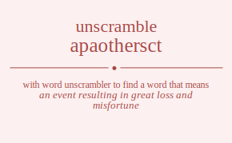

The word found after unscrambling apaothersct means that an event resulting in great loss and misfortune, a state of extreme (usually irremediable) ruin and misfortune, a sudden violent change in the earth's surface, .
apaothersct has jumble solution. Please see which words made after unscrambling apaothersct.
Daily Jumble Solution: catastrophe
You can use following links to see other word jumble solutions for the same day
apaothersct hoyter spulct tdpaa tobua

Unscrambled 11 letter words from apaothersct
catastrophe
Unscrambled 9 letter words from apaothersct
spectator
theocrats
pastorate
attachers
Unscrambled 8 letter words from apaothersct
protects
prostate
rheostat
postheat
phorates
postrace
chatters
ratchets
chapters
patchers
theocrat
thoraces
poachers
parashot
aerostat
apostate
castrato
castrate
teacarts
peacoats
attaches
attacher
reattach
tracheas
Unscrambled 7 letter words from apaothersct
potters
protest
spotter
pothers
strophe
thorpes
cotters
protect
copters
prosect
stretch
hectors
rochets
rotches
tochers
torches
troches
porches
throats
patters
spatter
tapster
rotates
toaster
teapots
esparto
proteas
seaport
hatters
shatter
threats
phatter
tephras
threaps
earshot
teashop
phorate
cottars
captors
carhops
coprahs
scatter
carpets
preacts
precast
spectra
costate
coaster
coaters
recoats
capotes
toecaps
chatter
ratchet
chaster
rachets
ratches
hepcats
patches
chapter
patcher
repatch
eparchs
parches
choreas
oraches
roaches
cheapos
poaches
shoepac
poacher
aerosat
hastate
ostraca
teacart
carates
rosacea
peacoat
attache
trachea
apaches
Unscrambled 6 letter words from apaothersct
troths
thorps
otters
rottes
tortes
toters
potter
poster
presto
repots
respot
stoper
topers
tropes
hotter
tother
horste
others
reshot
throes
tophes
pother
thorpe
ephors
hopers
posher
chotts
octets
cotter
corset
coster
escort
rectos
scoter
sector
copter
copers
corpse
cherts
hector
rochet
rotche
tocher
troche
chores
cosher
ochers
ochres
epochs
ottars
stator
tarots
tortas
pastor
strath
throat
torahs
pathos
potash
pharos
stater
taster
taters
tetras
treats
aptest
patter
paster
paters
prates
repast
tapers
trapes
rotate
oaters
orates
osetra
teapot
sapote
protea
operas
pareos
soaper
thetas
hatter
threat
earths
haters
hearts
spathe
tephra
teraph
threap
phrase
raphes
seraph
shaper
sherpa
ahorse
ashore
hoarse
tracts
cottas
cottar
actors
castor
costar
scrota
tarocs
coapts
captor
cartop
copras
charts
starch
scarph
carhop
coprah
stacte
carets
cartes
caster
caters
crates
reacts
recast
traces
aspect
epacts
carpet
preact
capers
crapes
escarp
pacers
parsec
recaps
scrape
secpar
spacer
cottae
costae
coater
recoat
coarse
capote
toecap
chaste
cheats
sachet
scathe
taches
rachet
arches
chares
chaser
eschar
search
hepcat
chapes
cheaps
eparch
preach
chorea
ochrea
orache
cheapo
attars
strata
tatars
satrap
aortas
sapota
arhats
reatas
tapeta
arepas
sarape
aortae
raphae
carats
attach
charas
pachas
carate
arecas
caesar
chaeta
apache
Unscrambled 5 letter words from apaothersct
torts
trots
stopt
ports
prost
sport
strop
shott
troth
horst
short
phots
tophs
thorp
trets
prest
strep
totes
otter
rotte
torte
toter
roset
rotes
store
tores
torse
petto
estop
pesto
poets
stope
topes
repot
toper
trope
pores
poser
prose
repos
ropes
spore
teths
thesp
ethos
shote
those
other
throe
heros
hoers
horse
hoser
shoer
shore
tophe
hopes
ephor
hoper
torcs
corps
crops
chott
rotch
torch
chops
porch
crest
crept
octet
coset
cotes
escot
recto
ceros
cores
corse
score
copes
copse
scope
coper
chest
techs
chert
retch
pechs
perch
chose
echos
chore
ocher
ochre
epoch
start
tarts
trapt
parts
prats
sprat
strap
tarps
traps
stoat
toast
ottar
tarot
torta
ratos
roast
rotas
sorta
taros
toras
aport
praos
proas
sapor
harts
tahrs
trash
paths
staph
harps
sharp
hosta
oaths
shoat
torah
hoars
horas
opahs
state
taste
tates
teats
testa
tater
tetra
treat
aster
rates
resat
stare
tares
tears
paste
pates
peats
septa
spate
tapes
tepas
apter
pater
peart
prate
taper
apers
apres
asper
pares
parse
pears
prase
presa
rapes
reaps
spare
spear
stoae
toeas
oater
orate
arose
paseo
psoae
opera
pareo
theta
haets
haste
hates
heats
earth
hater
heart
rathe
hares
hears
rheas
share
shear
ephas
heaps
phase
shape
raphe
scatt
tacts
tract
carts
scart
pacts
carps
craps
scarp
scrap
cotta
ascot
coast
coats
costa
tacos
actor
taroc
orcas
coapt
capos
copra
chats
tachs
chart
ratch
chars
crash
chapt
patch
caphs
chaps
parch
chaos
orach
roach
poach
tacet
tecta
caste
cates
cesta
taces
caret
carte
cater
crate
react
recta
trace
acres
cares
carse
escar
races
scare
serac
epact
capes
paces
scape
space
caper
crape
pacer
recap
ocrea
cheat
tache
teach
theca
aches
chase
chare
reach
chape
cheap
peach
attar
tatar
ataps
pasta
tapas
apart
paras
aorta
arhat
haars
pasha
reata
areas
arepa
parae
carat
sacra
pacas
pacha
aceta
areca
apace
Unscrambled 4 letter words from apaothersct
stot
tost
tots
tort
trot
orts
rots
sort
tors
opts
post
pots
spot
stop
tops
port
trop
pros
host
hots
shot
soth
tosh
thro
rhos
phot
toph
hops
posh
shop
soph
sett
stet
test
tets
tret
erst
rest
rets
tres
pest
pets
sept
step
pert
reps
tote
toes
rote
tore
eros
ores
roes
rose
sore
poet
tope
epos
opes
peso
pose
pore
repo
rope
teth
eths
hest
hets
hers
resh
pehs
hoes
hose
shoe
hero
hoer
hope
cost
cots
scot
torc
cors
orcs
rocs
cops
scop
crop
cosh
chop
sect
recs
ceps
pecs
spec
cote
cero
core
cope
echt
etch
tech
pech
echo
stat
tats
tart
arts
rats
star
tars
tsar
past
pats
spat
taps
part
prat
rapt
tarp
trap
pars
raps
rasp
spar
oast
oats
stoa
taos
rato
rota
taro
tora
oars
osar
soar
sora
atop
apos
soap
prao
proa
that
hast
hats
shat
hart
rath
tahr
rash
path
phat
haps
hasp
pash
harp
oath
hoar
hora
opah
tate
teat
ates
east
eats
etas
sate
seat
seta
teas
rate
tare
tear
ares
arse
ears
eras
rase
sear
sera
pate
peat
tape
tepa
apes
apse
pase
peas
spae
aper
pare
pear
rape
reap
toea
aero
eath
haet
hate
heat
thae
haes
shea
hare
hear
rhea
epha
heap
tact
acts
cast
cats
scat
cart
arcs
cars
scar
pact
caps
pacs
carp
crap
coat
taco
ocas
soca
arco
orca
capo
chat
tach
cash
arch
char
caph
chap
chao
cate
tace
aces
case
acre
care
race
cape
pace
ache
each
atap
tapa
para
aahs
haar
asea
area
acta
casa
paca
Unscrambled 3 letter words from apaothersct
pst
tot
sot
ort
rot
tor
ors
opt
pot
top
ops
sop
pro
pht
hot
tho
hos
ohs
rho
hop
poh
tet
set
ret
ers
res
ser
pet
pes
per
rep
toe
oes
ose
ore
roe
ope
eth
het
the
hes
she
her
hep
peh
hoe
cot
cos
cor
orc
roc
cop
sec
rec
cep
pec
att
tat
sat
tas
art
rat
tar
ars
ras
apt
pat
tap
asp
pas
sap
spa
par
rap
oat
tao
oar
ora
apo
hat
ahs
ash
has
sha
rah
hap
pah
hao
ate
eat
eta
tae
tea
sae
sea
are
ear
era
ape
pea
hae
act
cat
sac
arc
car
cap
pac
oca
ace
aas
aah
aha
Unscrambled 2 letter words from apaothersct
to
os
so
or
op
sh
ho
oh
et
es
er
re
pe
oe
eh
he
at
ta
as
ar
pa
ah
ha
ae
aa